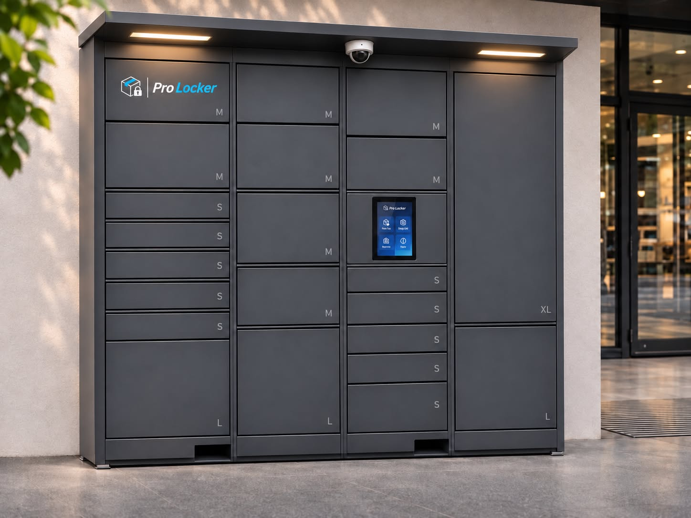

01
Étude des besoins
Volumes indicatifs, personnes concernées, usages et contraintes sont examinés pour dessiner le projet.
Le fonctionnement
De la première étude au retrait d’un colis, chaque étape est adaptée au cadre de l’établissement et aux fonctionnalités réellement retenues.
Avant l’installation
L’objectif n’est pas d’imposer un modèle, mais de cadrer une solution utile et cohérente avec votre site.
Volumes indicatifs, personnes concernées, usages et contraintes sont examinés pour dessiner le projet.
La circulation, l’accessibilité, la sécurité et les règles d’accès du lieu sont pris en compte.
La mise en place et les paramètres de fonctionnement sont définis selon l’offre et le site.
Au quotidien
Les modalités exactes de dépôt, notification et authentification doivent être confirmées avec la solution logicielle choisie.
Le livreur accède à l’installation selon les règles et horaires autorisés.
Le colis est associé au parcours prévu dans l’installation.
Le destinataire est informé selon la configuration retenue.
Le destinataire accède à son colis via le dispositif d’accès prévu.

Dans la durée
L’offre de location peut inclure l’assistance, la maintenance et le traitement des équipements défectueux selon les conditions contractuelles applicables.
Présenter mon besoin